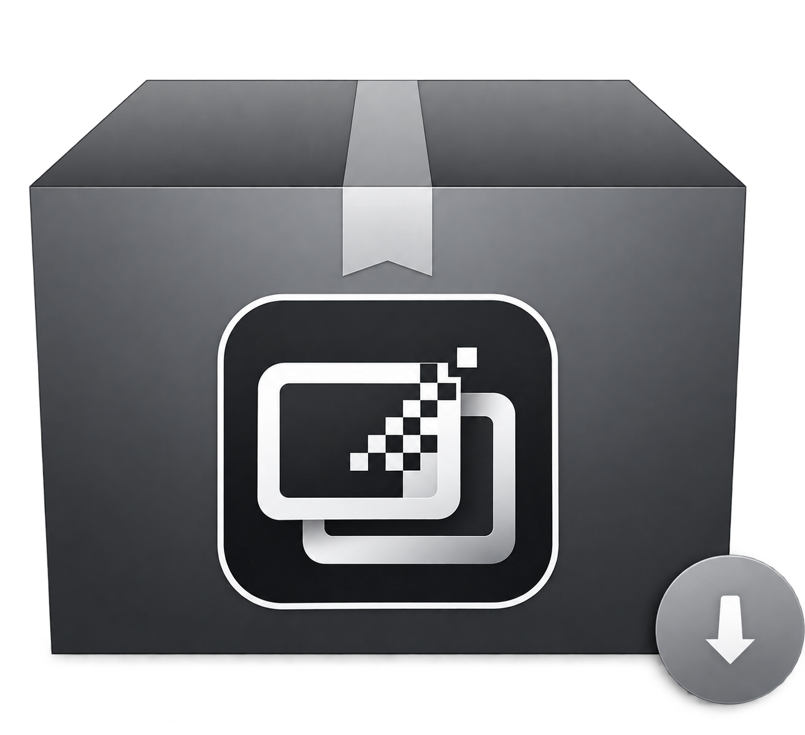

VideoViewer
AlphaVideoViewer 把直播素材里的透明视频，还原成真正的透明画面。
直播特效的透明画面常被压进同一个 MP4：一层彩色 RGB 画面，加一层灰度 Alpha 遮罩。普通播放器只会把两层都当作普通画面播放，无法还原透明。AlphaVideoViewer 会识别拼接布局、对齐两块源区域，再在 QuickLook 中本地合成 RGB × Alpha。
Windows 10 / 11 · QuickLook 4.x · WebView2 Runtime文件里有两层，
播放器只认一层
Alpha 拼接视频并不是「带透明通道的普通视频」，而是一种交付布局：颜色像素和不透明度数据共用一帧，预览端必须先还原它们的对应关系。
关键不只是「能播放 MP4」。预览端还得判断哪些像素描述颜色、哪些像素描述透明度，以及两块区域是否真的彼此对应。
AlphaVideoViewer 先检查 VAP 元数据；没有元数据时，由宿主按几何初筛并尝试 Media Foundation 像素检查。明确的普通视频交回 QuickLook；解码失败或样本歧义时保留几何命中，再由前端逐帧自检。
本地 QuickLook 预览 · 保守识别 · WebGL 合成
空格一按，看见真透明
不用先打开专门的播放器。在资源管理器中选中 .mp4/.mov/.m4v 文件，按下空格，AlphaVideoViewer 就会接入 QuickLook 预览流程，循环播放合成后的透明画面。
先读元数据，再看像素
腾讯 VAP v2 的文件里带着 vapc 盒，写着官方对位坐标——直接送进合成器，像素级对齐，零猜测。没有元数据时，先用容器几何初筛，再由逐帧像素自检确认布局。
用自己写的合成器合成的
一帧纹理，取两个任意源矩形，rgb × alpha 预乘输出。因为两个矩形可以不等比，主区一半分辨率的遮罩照样合成正确——那些假设两块同长宽比的库做不到。
明确为普通视频，就交回 QuickLook
Media Foundation 确认两半都呈彩色时，插件会放弃接管，交回 QuickLook 内置 VideoViewer。若解码失败或采样帧有歧义，宿主保留几何初筛结果，再由前端逐帧自检；若合成结果几乎全透明，则切回插件内的普通视频模式。
每个边缘，都看得清
在棋盘格、白色、黑色与自定义颜色之间切换。Ctrl + 滚轮缩放，拖拽平移，双击复位。信息面板里写着显示尺寸、源尺寸、时长、识别出的拼接方式，以及自检的结论。
遮罩给透明度，RGB 给颜色
每个输出像素都从 RGB 区域读取颜色 C、从遮罩区域读取透明度 A，再以预乘 Alpha 方式输出 (C·A, A)。两块源区域可以有不同尺寸，因此也能表达 VAP 中主画面与低分辨率遮罩不等大的布局。
有效 VAP v2 vapc 元数据提供 rgbFrame 与 aFrame 坐标，直接进入合成器。没有元数据时，几何初筛和像素自检逐步确认布局；明确为普通视频才交回 QuickLook，未知结果继续由前端自检。
SOURCE RECT → RGB × A → PREMULTIPLIED ALPHA先装本体，再装插件
AlphaVideoViewer 为 Windows QuickLook 增加透明视频支持。请先安装、启动 QuickLook，再打开插件安装包。
- 安装 QuickLook 4.x，并保持运行。
- 从 AlphaVideoViewer Releases 下载 .qlplugin。
- 选中安装包，按空格，点击安装。
- 重启 QuickLook，选中 .mp4/.mov/.m4v 文件后按空格。
检查画面，操作恰好够用
- Space
- 打开或关闭 QuickLook 预览
- Ctrl + 滚轮
- 缩放画布
- 长按拖动
- 平移画布，检查局部细节
- 双击
- 重置画布视图
工具栏里可以切换背景、翻转识别出的拼接方式、切换预览模式，以及打开信息面板。
从源码理解，再继续扩展
.NET / WPF 宿主嵌入 WebView2 播放器。Resources/Web 存放播放器界面与自写的 WebGL 合成器；Probing/ 存放容器解析与解码自检。
Plugin.cs
AlphaVideoViewerPanel.xaml.cs
Probing/Mp4Probe.cs · FrameProbe.cs
Resources/Web/
Samples/ · Scripts/QuickLook 是做什么的
免费 · 开源 · WindowsQuickLook 把 macOS 的「按空格预览」带到了 Windows：在资源管理器里选中文件、按一下空格，不用打开任何软件就能看到里面的内容；再按一下空格就关闭。
- 空格即预览按空格开关，方向键切换上一个/下一个文件，不用等软件启动。
- 本体自带 50+ 格式图片、PDF、文本与代码、视频、音频、压缩包等常见格式开箱即用。
- 插件继续扩展格式每装一个插件，QuickLook 就多认一种格式 —— AlphaVideoViewer 负责透明视频，SVGA 由 SvgaViewer 负责，PAG 由 PagViewer 负责。
先装 QuickLook 本体，
再装 AlphaVideoViewer 插件。
AlphaVideoViewer 是插件，需要 QuickLook 本体提供空格预览窗口。第一次使用，请先安装并运行 QuickLook。
QuickLook 本体 → AlphaVideoViewer 插件- 1
- 2
- 3
选中安装包，按空格安装
保持 QuickLook 运行，在资源管理器中选中 .qlplugin，按空格，在弹出的窗口中点击安装。
Space → 安装 - 4

免费下载 AlphaVideoViewer
把你本来就要交付的透明视频，先在本地看对。
.qlplugin · Windows 10 / 11 · QuickLook 4.x · GPL-3.0